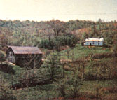

From suburb to self-sufficiency in five years . . . sound impossible? It's not. That's how long we-my wife, six children, and I-have been on our 100-acre farm in Ohio now, and you know something? We're almost there . . . almost self-sufficient!
It was a combination of noise, pollution, and crime in the city which caused us to take that drive through the country in the spring of 1969. Looking back, it now seems like a miracle we ever "happened onto" the gravel road that twists through these hills we've grown to love. I can remember us stopping to investigate a weather-beaten "For Sale" sign tacked to a shed by the side of the road. Little did we think then that the farm of our dreams was nearly ours at last!
Our family's search for the ideal country "spread" had not been without setbacks. Twice, we'd gotten ourselves into knotty situations: once when we moved into a dilapidated farm infested with termites . . . and again when we took on a place with too little land, situated on a busy highway.
After our second mistake, we were forced to move to the city, close to where I work, in order to save enough money for our dream farm. (I say "dream" because we were beginning to think that that was the only place it existed . . . in our imaginations and dreams.) But at the same time, we were carefully writing down everything we wanted that country homestead to have.
Then we found it: an ancient-but livable-whitewashed farmhouse nestled against a green hillside. The old place was terribly overgrown, and almost all signs of its past farming days had disappeared . . . but we loved it. The lady and gentleman who owned the farm were as kind as any two people we had ever met, and-since the 100 Guernsey County acres were too much for them-we were able to move into our new home almost immediately.
The downstairs had four rooms, a fireplace, and one "extra" we hadn't counted on: a bath. The place did require some work, though. Every room needed either paint or wallpaper, the woodwork was held together with square nails, all our window glass was wavy . . . and upstairs, the room dividers consisted of orange crates covered with cardboard and wallpaper! For the first few years, all we did was repair and remodel the house and clear off the overgrown lawn. There was never a dull moment, however, what with a possum living under the back porch, Jan accidentally stepping on a copperhead, and-of all things-a bat lurking upstairs.
With five bedrooms finished, the entire house is now very comfortable (although not fancy). And even though we cleared all the foliage from around the house, deer still come to drink from our spring in the backyard.
Somewhere along the way-as we scraped paint and hung new wallpaper-MOTHER came into our lives and we decided to become self-sufficient. The plan and requirements for self-sufficiency are, of course, different for every individual or family, but we've found that one prerequisite for success overshadows all others: namely, tremendous desire and commitment. This one important ingredient, we think, can make self-sufficiency work for anyone . . . given time, planning, and lots of hard work.
As proof of that, we now have nine head of cattle . . . a good sow for our pork . . . chickens, guineas, and ducks . . . a one-acre vegetable garden . . . and a small orchard with ten new trees and ten more on the way. We also have black walnuts, a small nut grove coming in . . . even pines for our Christmas trees. Our own gas well and furnace provide free heat. (We spend no out-of-pocket money for the operation of our wood stove either.)
We still have 12 to 18 months to go before we're completely self-sufficient-fields for corn and hay are being cleared, our 22 acres of pasture (which we just fenced) need to be built up and reseeded, the barn needs structural work, and so on-but at least our goal is now within reach.
My wife, Jan, loves to can food and I personally enjoy working with animals. But what really keeps me going whenever we hit a snag is the simple knowledge that in a few short months my eight-to-four rat-race job will be behind me . . . while ahead lies a new life of adventure and challenge to share with my loved ones.
It'll be a simple way of life, but one which we think our children will always remember fondly (no matter what they choose for their own futures) and one which my wife and I will enjoy together for many years.
Yep, thanks to Jan's never-ending energy and our library of reference books on gardening, animal ailments, etc.-and, of course, MOTHER-we're almost there. Almost self-sufficient!
|
|
 |
|